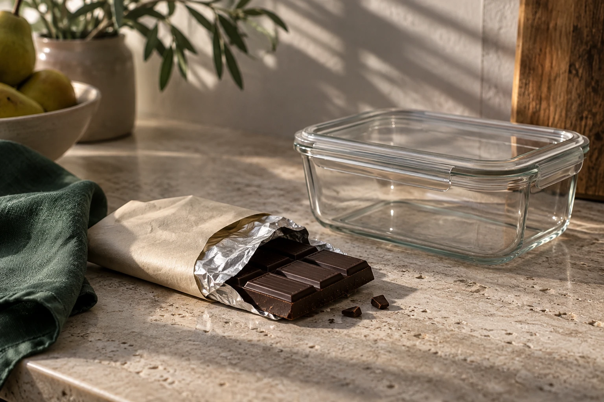
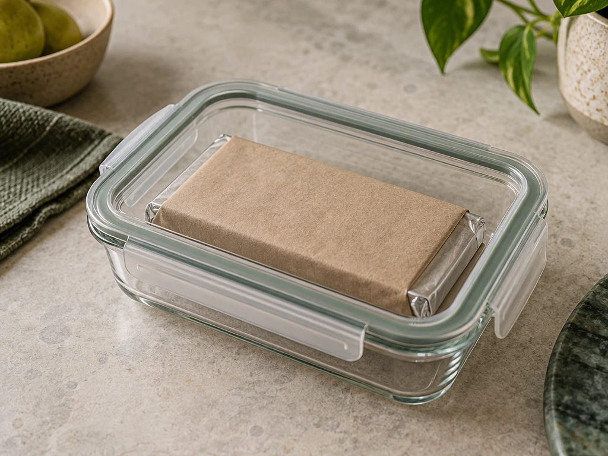
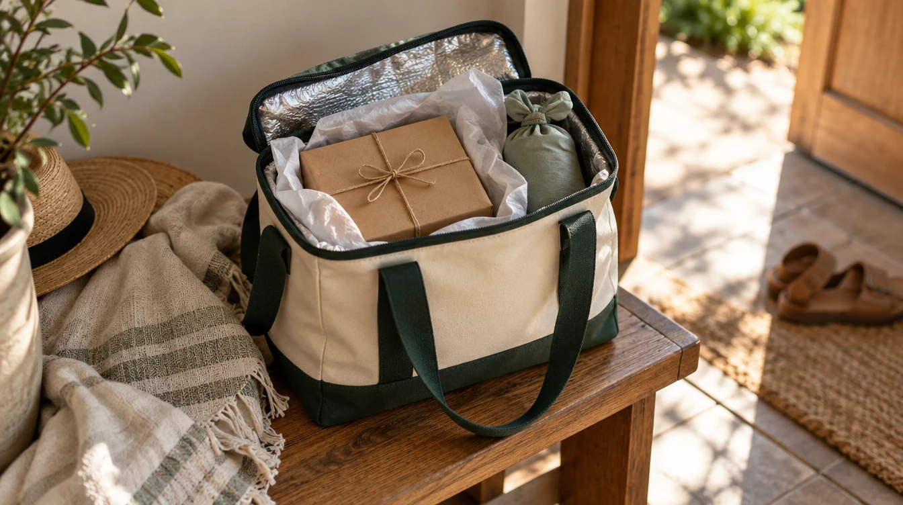

VERYGOOD JOURNAL · STORAGE & CARE
· AUSTRALIAN SUMMER GUIDE (EN-AU)
You bring home a chocolate bar and reach for the pantry. Then you remember how warm the kitchen gets in the afternoon.
For plain chocolate, a cool, dry cupboard is a good starting point. But if your home gets too warm, the fridge can be the more practical choice. Chocolate with fresh, perishable fillings needs a different approach: follow the maker's refrigeration instructions rather than advice intended for a plain bar.[1][5]

Plain chocolate and perishable cream-filled desserts have different storage needs when Australian kitchens warm up.
Before choosing a shelf, check the packaging.
A plain chocolate block, a cream-filled truffle and a chocolate mousse cake are different foods. If the label says to refrigerate, do that. General tips about keeping chocolate out of the fridge do not override a product's storage instructions.
For chilled desserts containing perishable dairy or egg ingredients, food safety comes before getting the perfect chocolate texture. FSANZ lists cream and egg-containing foods among potentially hazardous foods and generally recommends keeping these foods at 5°C or colder when stored cold.[5]
Haigh's recommends storing chocolate in a dry place away from sunlight, ideally around 15–20°C. It also notes that refrigeration may be necessary in very warm homes without air conditioning.[1]
That makes the question less about whether a fridge is always wrong, and more about your actual kitchen. A cupboard beside a hot oven is not a cool storage spot just because it is a cupboard.
Choose somewhere that stays reasonably steady rather than moving the same bar between warm and cold places throughout the day.
Keep plain chocolate well wrapped inside a sealed container. This helps protect it from fridge odours and moisture. Before opening it to eat, let the sealed package gradually lose its fridge chill somewhere cool; gradual warming helps limit condensation.[1]
This advice is for plain chocolate. Do not leave a perishable filled dessert sitting out to bring it to room temperature. Follow its own serving and storage directions.

Wrapping plain chocolate inside a sealed container helps limit moisture and fridge odours.
A whitish surface can be chocolate bloom, which may affect appearance and texture without being spoilage. Haigh's describes temperature-related fat bloom in its storage advice.[1]
A white patch alone does not establish what happened or prove a product is safe. Consider the type of food, its date mark and how it has been stored. Do not use a photograph or a taste test to clear a questionable cream-filled dessert.
Storage starts before the chocolate reaches your kitchen. Use an insulated bag for a warm journey, protect the package from moisture around ice packs, and do not leave chocolate in a parked car.[1]

When buying a dessert, ask for its storage instructions before you leave. That small check is more useful than a universal rule about putting every chocolate product in the fridge.
VERY GOOD · SYDNEY
[1] https://haighschocolates.com.au/how-to-care-for-your-chocolate — Haigh’s: how to care for your chocolate
[5] https://www.foodstandards.gov.au/business/food-safety/keeping-food-at-the-right-temperature — FSANZ: keeping food at the right temperature